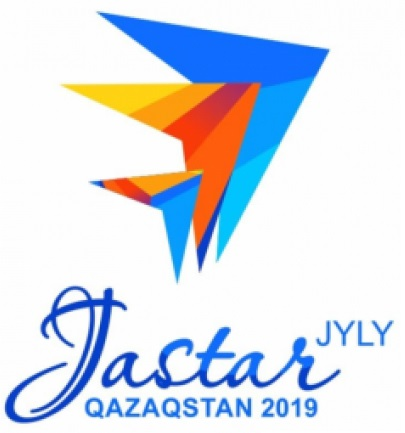

| № | Мектеп аты | Мекенжайы | Байланыс телефоны | |
|---|---|---|---|---|
| 1 | Ы.Алтынсарин атындағы №1 қоғамдық-гуманитарлық бағыттағы мектеп-гимназия | Кентау қаласы | 8-(778)-1347852, 8-725-3-630928 | 1mektepkentau@mail.ru |
| 2 | №2 Ш. Қанайұлы атындағы жалпы орта мектебі | Кентау қаласы | 8-(701)-3065407, 8-725-3-635590 | shkola2gorodakentau@mail.ru |
| 3 | М. Қазыбеков атындағы жалпы орта мектебі | Бостандық ауылы | 8-(705)-3731658, 8-725-3-361005 | Tyr_kazibekov@mail.ru |
| 4 | Қосқорған жалпы орта мектебі | Қосқорған ауылы | 8-(701)-5470924, 8-725-3-345335 | TUR_Koskorgan@mail.ru |
| 5 | Ұлықбек атындағы жалпы орта мектебі | Ибата ауылы | 8-(705)-3623435, 8-725-3-347300 | tyr_ylygbek@mail.ru |
| 6 | Иқан жалпы орта мектебі | Ескі Иқан ауылы | 8-(701)-4202421, 8-725-3-344252 | tyr_ikan@mail.ru |
| 7 | Достық жалпы орта мектебі | Ескі Иқан ауылы | 8-(701)-8419047, 8-725-3-364530 | Tyr_dostik06@mail.ru |
| 8 | В. Вахидов атындағы жалпы орта мектебі | Шаға ауылы | 8-(705)-2703770, 8-725-3-364893 | TYR_Vakidov@e.mail.ru |
| 9 | Ташанақ жалпы орта мектебі | Бершінтөбе ауылы | 8-(701)-2940910, 8-725-3-364892 | Tur_tashanak@mail.ru |
| 10 | Шойтөбе шағын комплектілі бастауыш мектебі | Шойтөбе ауылы | 8-(702)-1155233, 8-725-3-364899 | bas-shoitobe@mail.ru |
| 11 | Ы. Алтынсарин атындағы шағын комплектілі жалпы орта мектебі | Сауран ауылы | 8-(705)-5465069, 8-725-3-357397 | TUR_Altinsarin@mail.ru |
| 12 | Сауран жалпы орта мектебі | Сауран ауылы | 8-(705)-5689695, 8-725-3-368074 | tyr_sayran@mail.ru |
| 13 | Бабайқорған жалпы орта мектебі | Бабайқорған ауылы | 8-(701)-3045219, 8-725-3-347698 | TYR_babai_kyrgan@mail.ru |
| 14 | Абай жалпы орта мектебі | Абай ауылы | 8-(776)-9097006, 8-725-3-357149 | TYR_Abai@mail.ru |
| 15 | Балақаев атындағы шағын комплектілі жалпы орта мектебі | Үлгілі ауылы | 8-(777)-0966464, 8-725-3-357601 | TYR_Balakaev@mail.ru |
| 16 | Игілік шағын комплектілі бастауыш мектебі | Бабайқорған ауылы | 8-(771)-3261316, 8-725-3-357120 | tur-igilik@mail.ru |
| 17 | Т. Айтжанов атындағы жалпы орта мектебі | Аша ауылы | 8-(705)-8862761, 8-725-3-346650 | Tyr_Aitjanov@mail.ru |
| 18 | Шорнақ жалпы орта мектебі | Шорнақ ауылы | 8-(777)-6403405, 8-725-3-346619 | tur_shornak@mail.ru |
| 19 | Қызыл Әскер жалпы орта мектебі | Қосмезгіл ауылы | 8-(705)-8692403, 8-725-3-346328 | Tyr_kizil_asker@mail.ru |
| 20 | №5 К. Рысбеков атындағы негізгі орта мектеп-интернаты | Шорнақ ауылы | 8-(705)-4370020, 8-725-3-346622 | TYR_N5_int@mail.ru |
| 21 | Амангелді атындағы жалпы орта мектебі | Нұртас ауылы | 8-(701)-4078765, 8-725-3-369049 | tyr_amangeldi@mail.ru |
| 22 | С. Қожанов атындағы шағын комплектілі жалпы орта мектебі | С. Қожанов ауылы | 8-(705)-8986565, 8-725-3-370089 | tur_kojanov@mail.ru |
| 23 | Жалаңтөс шағын комплектілі бастауыш мектебі | Жалаңтөс ауылы | 8-(705)-8986881, 8-725-3-369106 | Bas_zhalantos@mail.ru |
| 24 | Қызыл жол жалпы орта мектебі | Шекербұлақ ауылы | 8-(707)-5753979, 8-725-3-365546 | tyr-kizil-jol@mail.ru |
| 25 | А. Иүгінеки атындағы жалпы орта мектебі | Жүйнек ауылы | 8-(702)-6774237, 8-725-3-362019 | TYR_Iugnaki@mail.ru |
| 26 | Шыпан жалпы орта мектебі | Шыпан ауылы | 8-(771)-5942626, 8-725-3-362042 | TYR_Shipan@mail.ru |
| 27 | Құмтиым жалпы орта мектебі | Құмтиым ауылы | 8-(701)-5824200, 8-725-3-348613 | tyr_kymtin@mail.ru |
| 28 | Тұран жалпы орта мектебі | Қарашық ауылы | 8-(702)-6649565, 8-725-3-348565 | tur_tyran@mail.ru |
| 29 | Қарашық жалпы орта мектебі | Қарашық ауылы | 8-(777)-4338045, 8-725-3-348573 | tyr_karashik@mail.ru |
| 30 | №3 мектеп-гимназиясы | Кентау қаласы | 8-(701)-3973611, 8-725-3-633641 | shcool_3_kent@mail.ru |
| 31 | №4 Ататүрк атындағы мектеп-лицейі | Кентау қаласы | 8-(701)-6781488, 8-725-3-632890 | school_4ataturk@mail.ru |
| 32 | №10 жалпы орта мектебі | Кентау қаласы | 8-(775)-7328380, 8-725-3-631040 | mr.10mektep@mail.ru |
| 33 | №12 Б. Момышұлы атындағы жалпы орта мектебі | Кентау қаласы | 8-(747)-9902569, 8-725-3-634870 | shkoola12bmomyshuly@mail.ru |
| 34 | №14 Әл-Фараби атындағы мектеп-гимназиясы | Кентау қаласы | 8-(701)-2941534, 8-725-3-635691 | t_usen@mail.ru |
| 35 | №16 Ю. Гагарин атындағы мектеп-лицейі | Кентау қаласы | 8-(705)-8629467, 8-725-3-632445 | shcool16@mail.ru |
| 36 | №17 А. Науаи атындағы жалпы орта мектебі | Кентау қаласы | 8-(702)-3876115, 8-725-3-635998 | navoiy17@mail.ru |
| 37 | №22 М. Әуезов атындағы мектеп-гимназиясы | Кентау қаласы | 8-(701)-1799842, 8-725-3-635510 | sh22g_kentau@mail.ru |
| 38 | №23 Ә. Бөкейханов атындағы жалпы орта мектебі | Кентау қаласы | 8-(701)-4672993, 8-725-3-635987 | osch23_Kentau@mail.ru |
| 39 | №24 Т. Рысқұлов атындағы жалпы орта мектебі | Кентау қаласы | 8-(775)-2456161, 8-725-3-639889 | ruskulov-turar@mail.ru |
| 40 | Дарын | Кентау қаласы | 8-(705)-1555259, 8-725-3-632627 | Kentau_daryn@mail.ru |
| 41 | Кентау БИЛ | Кентау қаласы | 8-(701)-3333929, 8-725-3-632416 | kentau.ktl@mail.ru |
| 42 | №5 Абай атындағы жалпы орта мектебі | Хантағы ауылы | 8-(702)-6930755, 8-725-3-648343 | goo_shcool5@mail.ru |
| 43 | №6 А.С. Пушкин атындағы жалпы орта мектебі | Хантағы ауылы | 8-(701)-1265248, 8-725-3-648255 | 6.a.s.pushkina@mail.ru |
| 44 | №7 Ж. Жабаев атындағы жалпы орта мектебі | Ащысай ауылы | 8-(702)-3733766, 8-725-4-340050 | 7mektep_achisay@mail.ru |
| 45 | №8 М. Горький атындағы жалпы орта мектебі | Ащысай ауылы | 8-(701)-1717763, 8-725-3-640020 | shaxmira@mail.ru |
| 46 | №9 С. Қожанов атындағы жалпы орта мектебі | Байылдыр ауылы | 8-(775)-7667588, 8-725-3-642223 | baildyr_mektep9@mail.ru |
| 47 | №19 Ә. Молдағұлова атындағы мектеп-лицейі | Бүргем ауылы | 8-(775)-4685817, 8-725-3-635748 | tazhimbetova65@mail.ru |
| 48 | Қашқари атындағы мектеп-лицейі | Қарнақ ауылы | 8-(707)-1573303, 8-725-3-647267 | Kashgari@mail.ru |
| 49 | Қарнақ жалпы орта мектебі | Қарнақ ауылы | 8-(777)-6702242, 8-725-3-647366 | schoolkarnak@mail.ru |
| 50 | Шаш төбе жалпы орта мектебі | Қарнақ ауылы | 8-(705)-4901927, 8-725-3-647216 | shkola_shashtobe@mail.ru |
| 51 | №15 Төрткүл төбе жалпы орта мектебі | Құшата ауылы | 8-(701)-7033867, 8-725-3-361016 | tortkultobe15@mail.ru |
| 52 | Майдантал жалпы орта мектебі | Ынталы ауылы | 8-(702)-7304455, 8-725-3-365018 | TYR_Maidantal@mail.ru |
| 53 | Қаражон шағын комплектілі жалпы орта мектебі | Қаражон ауылы | 8-(701)-5677783, 8-725-3-369005 | Tur_Karajon@mail.ru |
| 54 | Серт шағын комплектілі жалпы орта мектебі | Бабайқорған ауылы | 8-(701)-1024599, 8-725-3-357150 | tyr_Shert@mail.ru |
| 55 | А. Үсенов атындағы жалпы орта мектебі | Теке ауылы | 8-(707)-9500542, 8-725-3-349198 | tyr_ysenov@mail.ru |
| 56 | М. Әуезов атындағы жалпы орта мектебі | Ораңғай ауылы | 8-(877)-7699897, 8-725-3-345385 | TYR_Ayezov@mail.ru |
| 57 | Шобанақ жалпы орта мектебі | Еңбекшідихан ауылы | 8-(705)-2393020, 8-725-3-345500 | Tyr_shobanak2016@mail.ru |
| 58 | Х. А. Яссауи атындағы жалпы орта мектебі | Ескі Иқан ауылы | 8-(701)-1427878, 8-725-3-344219 | tyr_iassayi@mail.ru |
| 59 | Ескі Иқан жалпы орта мектебі | Ескі Иқан ауылы | 8-(776)-3016500, 8-725-3-344468 | tyr_eski_ikan@mail.ru |
| 60 | Молда Мұса атындағы жалпы орта мектебі | Қазақстанның 30 жылдығы ауылы | 8-(701)-1713373, 8-725-3-366597 | TYR_Molda_mysa@mail.ru |
| 61 | Шоқтас шағын комплектілі бастауыш мектебі | Шоқтас ауылы | 8-(705)-4687836, 8-725-3-361006 | turkestan-shoktas@mail.ru |
| 62 | Көксарай шағын комплектілі бастауыш мектебі | Абай ауылы | 8-(702)-6918775, 8-725-3-357125 | bas_koksarai@mail.ru |
| 63 | №25 жалпы орта мектебі | Ескі Иқан ауылы | 8-(701)-4391593, 8-725-3-344439 | tyr_n25_shkola@mail.ru |
| 64 | Ойық шағын комплектілі бастауыш мектебі | Ойық ауылы | 8-(775)-3494286, 8-725-3-364779 | turkestan-oik@mail.ru |
| 65 | Кентау қаласы | 8-(705)-4346799, 8-725-3-639854 | oblastnayaspecshkola2003@mail.ru | |
| 66 | №11 Ақын Тума негізгі орта мектебі | Қарнақ ауылы | 8-(705)-9749959, 8-725-3-647317 | mr.dilmurot@mail.ru |